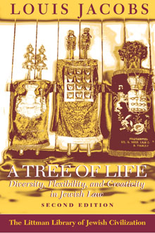

A Tree of Life
Diversity, Flexibility, and Creativity in Jewish
Law
Now revised and expanded, Louis Jacobs's fascinating study shows how halakhic rulings through the ages have been influenced by social, economic, theological, and even political factors as well as by consideration of the wider ideals and demands of Judaism. Halakhic responses to changed social considerations, particularly regarding women and questions of personal status, new technologies and discoveries, and attitudes to non-Jews are all considered in depth.
'Louis Jacobs demonstrates a profound scholarship in the second edition
of this important work. The breadth of source and the volume of analysis
are truly extraordinary.'
Reuven Livingstone, Jewish Chronicle
More info
'A most impressive demonstration of the healthy responsiveness which Judaism
has always manifested to the disparate challenges of time and place.'
Ismar Schorsch, Jewish Theological Seminary
'Fascinating . . . a fund of valuable information, but its argument is also
a signal instance of the attachment to tradition embraced with a rational integrity.'
William Horbury, Expository Times
'Louis Jacobs demonstrates a profound scholarship in the second edition
of this important work. The breadth of source and the volume of analysis are
truly extraordinary.'
Reuven Livingstone, Jewish Chronicle
The central thesis of A Tree of Life, now revised and expanded, is that social, economic, theological, and even political factors have always played a part in framing of Jewish law, as has consideration of the wider ideals of Judaism. Through discussion of historical and contemporary halakhic responses to a wide range of issues, Louis Jacobs shows how the halakhic system has demonstrated its potential for vitality, creativity, and sensitivity.
Louis Jacobs's call, in the last chapter, for a non-fundamentalist approach to halakhah was a cause of controversy both when the book was first published in 1984 and subsequently. The new introduction written for this edition responds robustly to the criticisms raised, and also summarizes new developments, both halakhic and scholarly, in the various areas covered.
About the author
Louis Jacobs, founding rabbi of the New London Synagogue, is a renowned scholar with an international reputation as a lecturer. He is the author of The Jewish Religion: A Companion (1995) and of many other distinguished books, several of them published by the Littman Library, including A Tree of Life (second edition 2000) and Hasidic Prayer (paperback 1993), as well as an edition and translation of Zevi Hirsch Eichenstein's Turn Aside from Evil and Do Good (1995).
Contents
Introduction to the Second Edition
Introduction: Halakhah and Aggadah
The Talmud, Source of the Halakhah
The Spirit of the Halakhah
Exemptions and Extensions
The Influence of Philosophy
The Influence of Mysticism and Kabbalah
Hasidism and Halakhah
Responses to the Gentile World
Halakhah and Sectarianism
Halakhic Responses to Social Changes: General Principles
Halakhic Responses to Social Changes: Further Examples
New Inventions and Discoveries and the Halakhah
Halakhah and Ethics
Halakhah and Social Conduct (Derekh Erets)
Halakhah and Psychology
Halakhah and Minhag: The Customs of the People as Law
Towards a Non-Fundamentalist Halakhah
Appendix A: The Literary Form of the Halakhah
Appendix B: The Problem of the Mamzer
Note on Proper Names and Transliteration
Note on Talmudic and Halakhic Sources
Bibliography
Index of Biblical, Mishnaic, and Talmudic References
General Index
Reviews
'Rabbi Louis Jacobs is well known as a highly distinguished liberal interpreter
of Judaism. Many of his works . . . are immediately accessible to the general
reader, but his interpretation is deeply rooted in scholarly study of the rabbinic
writings, sources which also inspire "conservative" expressions of a Judaism
markedly different from his own . . . The author makes his point in a fascinating
way . . . Vivid light is cast on Jewish-Christian relations among other issues
. . . Jacobs's book is a fund of valuable information, but its argument is also
a signal instance of the attachment to tradition embraced with a rational integrity.'
William Horbury, Expository Times
REVIEWS OF THE SECOND EDITION
'Louis Jacobs demonstrates a profound scholarship in the second edition
of this important work. The breadth of source and the volume of analysis are
truly extraordinary.'
Reuven Livingstone, Jewish Chronicle
'It raises questions that still await an adequate response for resolution
from the Orthodox authorities.'
Miri Freud-Kandel, Jerusalem Post
'One of the few works on the nature and development of Jewish law written from a Conservative point of view, and it can be seen as a "classic" . . . Jacobs succeeds in an admirable way in his self-imposed task of developing "a theory of halakhic change for those who are loyal to the halakhic traditions and yet accept modern values", a task which will probably continue to occupy Conservative and Orthodox thinkers for generations to come.'
Catherine Hezser, Journal of Law and Religion

344 pages
ISBN: 978-1-874774-48-8
£18.95 / $29.95
Publication 2000